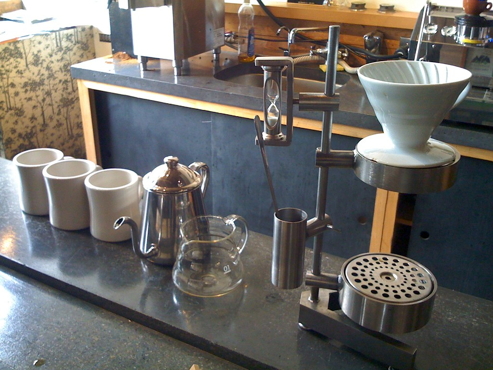

French Press
A french press gives you a heavier cup because nothing filters out the oils. Steep coarse grounds for four minutes, then press the plunger down slowly.
The Daily Cup.
You do not need expensive machines. A few simple habits will improve almost any cup.
Coffee tastes best within a month of its roast date. Buy whole beans in small amounts and store them in a sealed container away from light.
Grinding your beans right before brewing keeps the flavor from fading. Coarse grounds suit a french press, while finer grounds suit a pour over.
Water that is boiling will scorch your coffee and taste bitter. Let the kettle rest for about thirty seconds after it boils before you pour.
A pour over is the easiest way to see how much these small choices matter. It takes about four minutes and the only equipment you need is a cone, a paper filter, and a kettle. Because you control the water yourself, you can taste the difference when you change one thing at a time.

A french press gives you a heavier cup because nothing filters out the oils. Steep coarse grounds for four minutes, then press the plunger down slowly.
Cold brew is the least fussy method of all. Stir coarse grounds into cold water, leave the jar in the fridge overnight, and strain it in the morning.
Pick one method, try it this week, and change only one thing each time you brew.